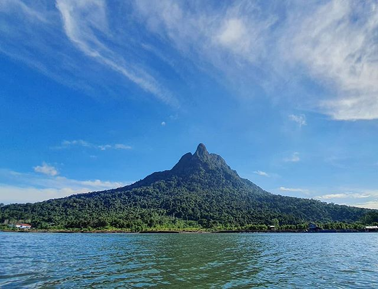
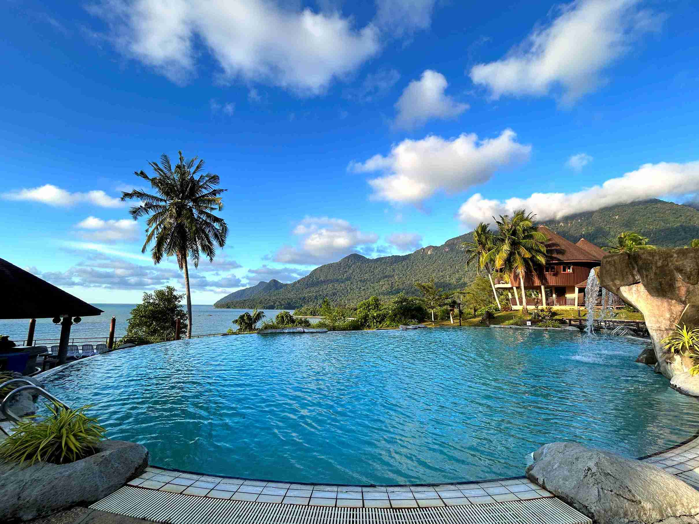
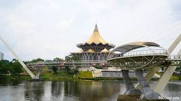
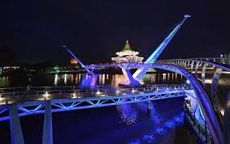

Take a trek to Mount Santubong to start your journey. Savor expansive views of the South China Sea, a variety of fauna, and stunning rainforest landscapes. "Mount Santubong".


Enjoy the serene shoreline while unwinding at Damai Beach. Swimming, sunbathing, water sports, and taking in the stunning sunset are all available to visitors. "Damai Beach".
Discover the earliest national park in Sarawak, which is well-known for its unusual rock formations, mangrove forests, hiking paths, and the endangered proboscis monkey. "Bako National Park".

The famous pedestrian bridge that spans the Sarawak River is called the "Darul Hana Bridge".

The Darul Hana Bridge illuminates with an amazing, vibrant LED light display at night."Darul Hana Bridge".